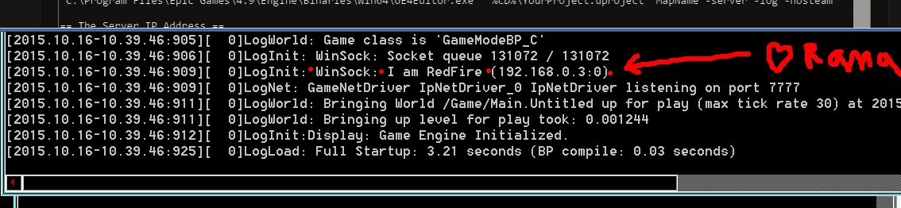

How To Test Dedicated Server Games Via Commandline
Contents
Overview
Author ( )
In this wiki I show you how you can run a dedicated server game with 2 connecting clients from commandline! (editor closed or used for other purposes)
All the batch files listed below go in your main project directory where your .uproject is.
Steam is disabled via -nosteam because you can't run multiple network instances from the same steam account.
.bat files
Just make a text file and rename it to .bat instead of .txt, make sure file extensions are visible in your operating system or it might be saving to .txt.bat :)
UE4Editor.exe
Make sure the UE4Editor path is accurate for your machine and is the correct version number.
Step 1: Server Bat File
VictoryCreateDedicatedServer.bat
"C:\Program Files\Epic Games\4.9\Engine\Binaries\Win64\UE4Editor.exe" "%CD%\YourProject.uproject" MapName -server -log -nosteam
-server is the main thing to note here :)
The Server IP Address
When the Server instance loads you will notice in the log that it lists a WinSock IP address.
This is the IP address you use for client .bat files below!

Step 2: Client Bat Files
VictoryCreateClient1.bat
TIMEOUT /T 6 "C:\Program Files\Epic Games\4.9\Engine\Binaries\Win64\UE4Editor.exe" "%CD%\YourProject.uproject" 192.168.0.3 -game -ResX=800 -ResY=900 -WinX=0 -WinY=20 -log -nosteam
VictoryCreateClient2.bat
TIMEOUT /T 6 "C:\Program Files\Epic Games\4.9\Engine\Binaries\Win64\UE4Editor.exe" "%CD%\YourProject.uproject" 192.168.0.3 -game -ResX=800 -ResY=900 -WinX=800 -WinY=20 -log -nosteam
You can use shorter than 6 seconds if your dedicated loads fast :)
Step 3: All In One Bat File
start VictoryCreateDedicatedServer start VictoryCreateClient1 VictoryCreateClient2
The start command initiates new process so all three commands run simultaneously.
Then you just call this bat file to start the whole process each time!
Player Starts
Make sure to have enough player starts to support loading in all your clients at the same time, or else some players might not join or end up in the floor or something :)
Conclusion
Now you can start Dedicated Server games with 2 clients from commandline with 1 click!
Enjoy!
( )